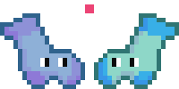

Odd Socks
Jan 2021
A 2d puzzle-platformer game where you reunite lost socks.
Made in a team of 4 for Global Game Jam 2022.
Made in a team of 4 for Global Game Jam 2022.
Godot
Clip Studio Paint

Trailer
Details
Odd Socks was made in the 48-hour Global Game Jam 2022 in a team of 4. I worked as both an artist and a programmer, having created
the background image, the tileset system, and other miscellaneous pieces of code.
Odd socks is intended to be a 2-player game, with the main mechanic being the ability to switch positions with the other player. As momentum is preserved during the switch, the players are able to gain extra height, and much of the game involves using this ability to maneuver through the dangerous world.

Odd socks is intended to be a 2-player game, with the main mechanic being the ability to switch positions with the other player. As momentum is preserved during the switch, the players are able to gain extra height, and much of the game involves using this ability to maneuver through the dangerous world.